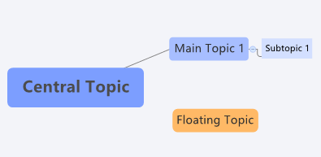
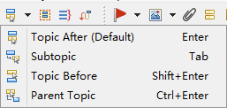
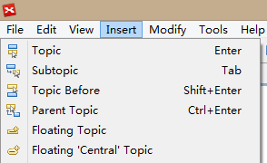
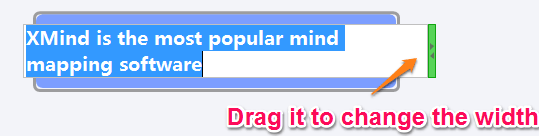
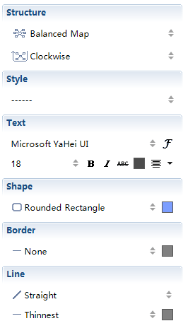
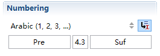

トピック
トピックの種類XMind には 4 つの異なるトピックがあります： 中心トピック、メイン トピック、サブトピック、フローティング トピック。

- 中心トピック： マインド マップの出発点として、中心トピックはマインド マップの核となるアイデアの記載します。
- メイン トピック: 中心トピックの周囲に、最初のレベルとして、メイントピックに、核となるアイデアの主要な枝を配置します。
- サブトピック: サブトピックは、メイントピックスとフローティング トピックの子供のトピックです。通常は細部を記載するために使用します。
- フローティング トピック： 他のトピックに属していないトピックを、地図上の任意の場所に、独立したアイデアとして置いておくことができます。 通常、他のトピックと弱い関係を持っています。
- トピックを作成するいくつか方法があります： ショートカット、ツールバー、メニュー コマンド、マウス。
- ショートカット:
- Enter: 同じレベルで、メイン トピック、またはトピックを作成します。
- Tab/Insert: サブトピックを作成します。
- Shift + Enter: 現在選択されているトピックの前に、同じレベルのトピックを作成します。
- Ctrl + Enter: 現在選択されているトピックの親トピックを作成します。
- ツールバー: 対応するトピックを作成するために、以下のアイコンをクリックします。
 - メニュー コマンド:
- トピック: メイン トピックまたはトピックを同じレベルで作成します。
- サブトピック: サブトピックを作成します。
- 後方トピック: 現在のトピックと、前に同じレベルのトピックを作成します。
- 親トピック: 現在選択されているトピックの親を作成します。
- フローティング 中心トピック: 中央トピックと同じ属性を持っているフローティング トピックを作成します。
- フローティング トピック: メイントピックと同じ属性を持つフローティング トピックを作成します。
- マウス：
- トピックを右クリックして： 「挿入 → トピック/サブトピック」
- 空白領域をダブルクリック : フローティング トピックを作成します。
- 空白領域を右クリックして："フローティング トピック/フローティング 中心トピック"
注:サブトピックを作成する前にトピックを選択する必要があります。
トピックの編集
- テキストの編集
- 右クリックし「編集」メニューを選択する。
- トピックをダブルクリックする。
- "F2"キーを押す。
- 「スペースキー」を押す。
- 「編集 → 削除」メニューを選択する。
- 右クリックし「削除」を選択する。
- ツールバーの削除アイコンをクリックする。
- 「Delete」キーを押す。
- トピックを選択して編集モードに入る。
- トピックボックスの右側をドラッグしトピックの幅を変更する。

注： トピック幅はテキスト編集した幅にあわせて調整されますが、上記説明の操作で、幅をより狭くすることもできます。
トピックのプロパティ
- トピックを選択して、メニューから「表示 → プロパティ」をクリックしてください。
- その後、次の変更をすることができます:
- 構造: マインド マップやその枝のレイアウトを再編成します。
- スタイル： 既存のスタイルデザインの1 つを選択して、すべてのプロパティの設定を変更します。
- テキスト: テキストのフォント、サイズ、タイプ、色、配置を変更します。
- 形状： トピックの図形と背景色を選択します。
- ボーダー: 線の種類、トピックの境界線の幅と色を設定します。
- ライン: 線の種類、幅、および色を設定します。

自由配置
XMind のデフォルトの構造である均衡マップ(時計回り)では、トピックの位置を整頓しています。
- Ctrl (Mac では Alt):選択したトピックを新しい位置にコピーします。
- Alt (MacではCommand):選択したメイン トピックに応じて新しい位置に移動します。
- Shift:選択したトピックをフローティング トピックとして新しい位置に移動します。
トピックの段落番号
- 複数のトピックを選択し、メニューから「ビュー → プロパティ」をクリックします。
- 下記のように、段落番号のプロパティを設定します。
- 番号のスタイルを選択する： 段落番組の 4 つのスタイルか、取り消すための「なし」を選択します。
- 階層型数字 : アイコンをクリックして有効にすると、サブトピックの段落番号を、親のトピックの段落番号から継承できるようになります。
- 接頭語と接尾語 : 接頭語項目に値を入れることにより、段落番号に接頭語が付加され、接尾語項目に値を入れることにより、段落番号に接尾語が吹かれます。
